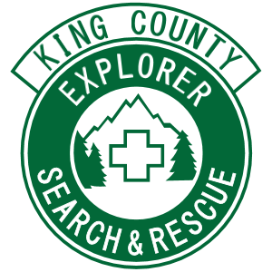

King County, WA
Est. 1954
Learn
Founded in 1954, King County Explorer Search & Rescue is one of the earliest Search & Rescue organizations established in the United States and the largest of eight member-units of the King County Search & Rescue Association.
Donate
100% Volunteer, 100% Donation Funded. King County Explorer Search & Rescue is a non-profit organization. It is donations from people like you that make Search & Rescue services possible. Please consider donating today.
Join
King County Explorer Search & Rescue is open to both adult and youth membership. New members must complete our comprehensive basic training program which is designed to prepare them for the challenges that they will face in the field.